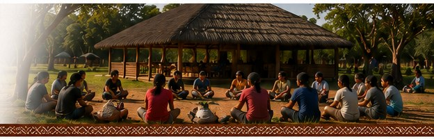
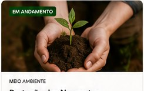
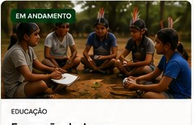
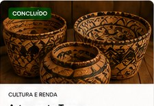

Iniciativas que transformam
Projetos Terena
Conheça iniciativas que fortalecem nossas aldeias, valorizam nossa cultura e promovem desenvolvimento sustentável.
▦
Todos os Projetos
Veja todos os projetos desenvolvidos nas aldeias.
🌱
Em Andamento
Acompanhe iniciativas que estão em execução.
✓
Concluídos
Conheça projetos já realizados com sucesso.
📁
Projetos
Detalhes completos de cada iniciativa.


Formação de Jovens Líderes
Formação para liderança comunitária, cidadania e valorização cultural.
Ver detalhes →